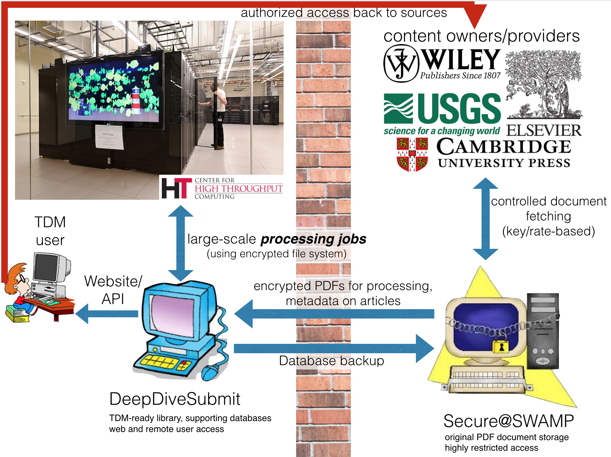

GeoDeepDive
GDD
Motivation
The scientific literature contains valuable data. Synthesizing them is critical to addressing a wide range of questions, ranging from the history and future of global biodiversity to the evolution of continental crust, but doing so manually can be prohibitively time consuming.
We are building a scalable, dependable cyberinfrastructure to facilitate new approaches to the discovery, acquisition, and utilization of data and knowledge in the published literature.
Overview
The primary focus of this U.S. National Science Foundation EarthCube building block project (NSF ICER 1343760) is the construction of a cyberinfrastructure that is capable of supporting end-to-end text and data mining (TDM) and knowledge base creation/augmentation activities in the geosciences and biosciences. The infrastructure includes the following key components:
- Automated, rate-controlled and authenticated original document fetching
- Secure original document storage and bibliographic/source metadata management
- Automated pre-processing of documents by multiple software tools; ability to quickly deploy new tools/versions of tools across all documents
- API for basic full-text search and discovery capabilities
- Ability to pre-index content using external dictionaries (e.g., Macrostrat lithologies)
- Ability to generate fully documented, bibliographically complete testing and development datasets based on user-supplied terms
- Capacity to support the deployment of user-developed TDM applications across full corpus, with on-demand updates as new relevant documents are acquired
Current Partners


Check back often. We are actively seeking new partnerships and content providers.
Derived Data Products
CoreNLP
Natural language analysis output from Stanford CoreNLP. Mutiple versions are available.
Tesseract
Optical character recognition and layout parsing from tesseract-ocr.
Cuneiform
Optical character recognition and layout parsing from cuneiform.
Custom
Custom font and layout recognition output developed for PaleoDeepDive.
TBA
We have the ability to rapidly run new tools and versions of tools against the entire TDM library as they become available.
Pipeline
The path of a document from its source at a content provider, to a derived data product and, ultimately, to a synthetic result set, is referred to as the “pipeline”. A rough schematic of the pipeline leading up to the raw data for TDM work is as follows:

As an example, the full range of TDM raw data produced by our infrastructure for a single, open access USGS Professional Paper can be downloaded here: [tgz archive]. The linked tarball archive includes all file outputs that are produced by processing the original document input. Sentence tables are generated by processing NLP XML file output and formatting it for easy ingestion into PostgreSQL, a useful starting point for building DeepDive applications.
Infrastructure Schematic Overview
The following image provides a general overview of the pipeline. The processes starts on the right-hand side of the “brick wall”. Our secure servers fetch original documents from our partner content providers. These documents, and associated bibliographic and URL metadata, are stored on access restricted encrypted volumes. Each institution has its own mechanism of providing original content and making it accessible to our infrastructure.
After obtaining the original documents and associated bibliographic metadata, the next step is processing the documents to generate data products (such as NLP, see above). Doing so requires the use of High Throughput Computing. All of the files transferred to the HTC system are encrypted. The data products, which add formatting, layout, and linguistic annotation to the original text, are now ready for use in TDM applications built by domain scientists.
End Use
Every word and datum that can be derived from our infrastructure is fully traceable back to the original content provided by our partner publishers and organizations. Users must provide full citation and, when relevant, URL links back to all original works that contributed data to their application or results. This infrastructure should also be cited and we welcome new collaborations.